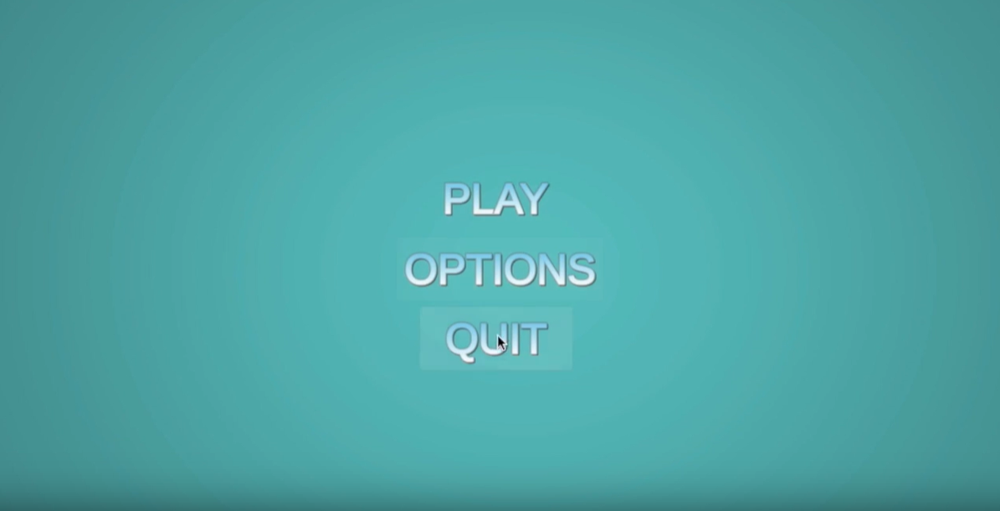
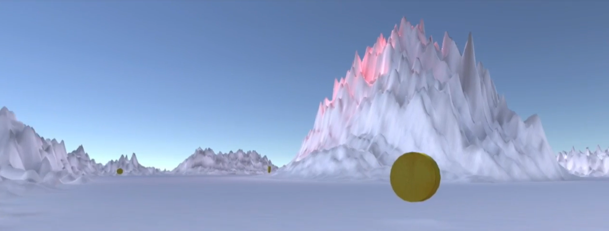
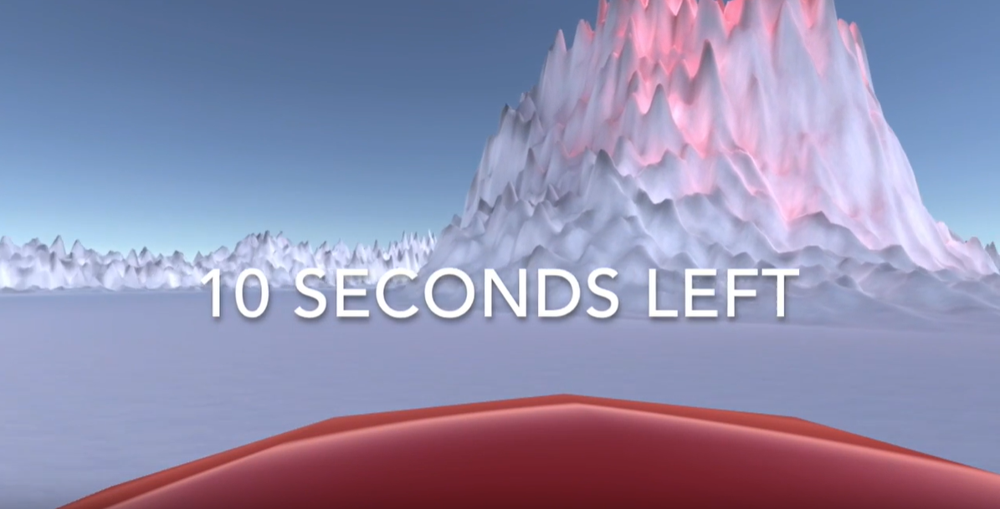

Summary
This project was a hobby project that I created to test out creating a game in Unity. I wanted to try out the 3D environment and design a first person view game.
The focus was to test out different techniques and create something that could be played. I started out with creating the environment and continued on with adding steering for the player and camera angles. Then I continued on with the possibility to collect coins and a timer so the player only has a certain time to collect all coins.
Lastly I created a small menu to practice on allowing user input. A small video when playing the game can be seen below.
Technical Walkthrough
The game starts with a simple menu that I just added text and buttons to and a small script attached to it that saves the users settings for the game.
The Ice World is done just by using a simple plane as start and then adding height to certain places in the area. The "car" that the player steers is just a simple capsule that is placed in a horizontal position and fixed in this position so that it can't fall to the side. Then a velocity and acceleration is added.
The coins are placed out randomly and has a hitbox attached so when the players hitbox reaches a coin, it disapears and one point adds to the players score. A small sound effect is also added for collecting the coins.
Lastly a timer is implemented that starts when the game starts and the player will get a notice when it is 10 seconds left and a counter displays in the bottom of the screen. If the player don't collect all coins before the time runs up, the player loses.
This is a game with lots of work left but the purpose of the project was just a fun weekend project to get started in the Unity environment.